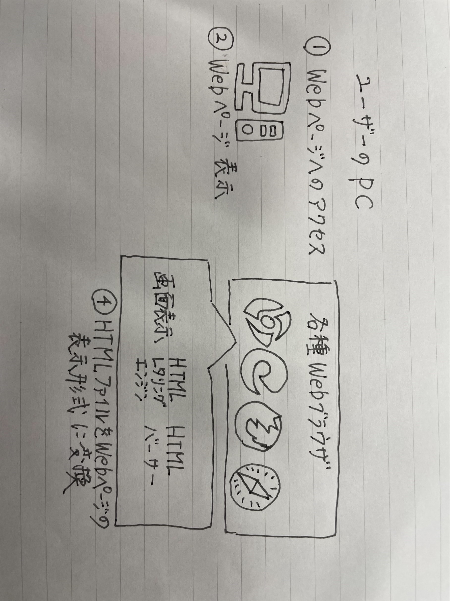
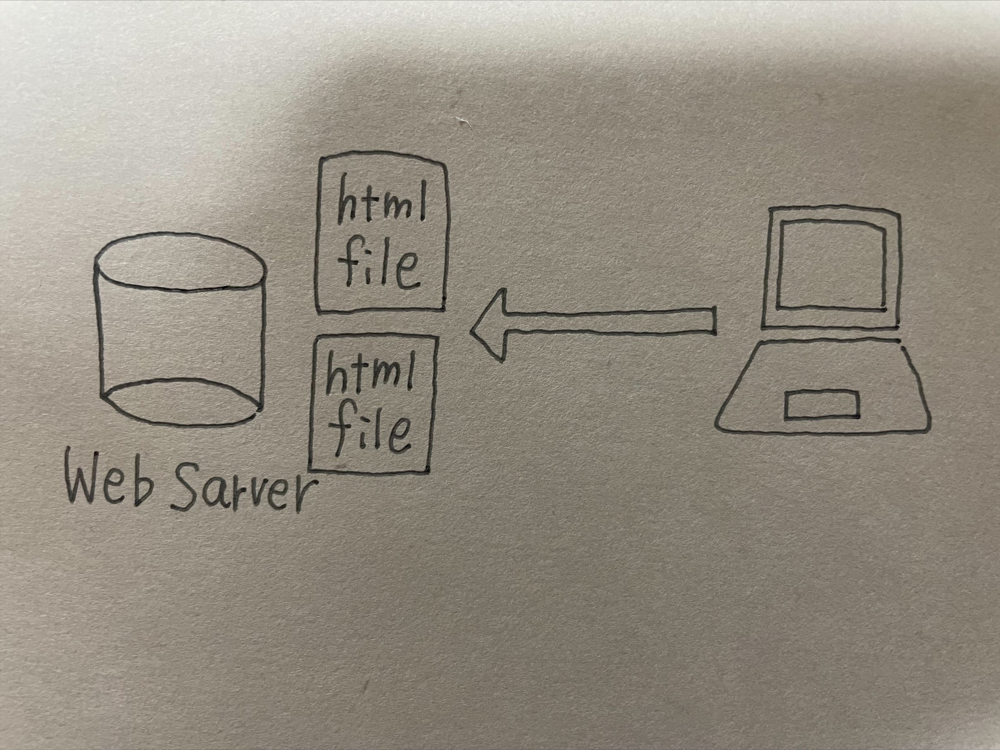
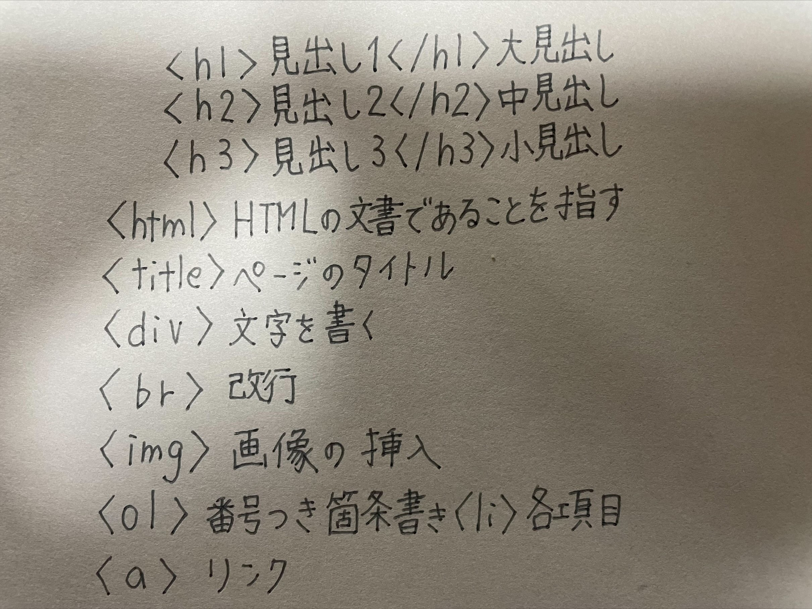

1.Untracked（Gitが管理してない、新規のファイル）
2.modified（Gitが管理していて、変更されているファイル）
3.stageed（Gitが管理していて、git add されているファイル）ジトリのコピーをローカルに落とす（クローン）コマンド
このコマンドを実行すると.gitフォルダを含めリモートリポジトリがクローンされる
git add
・ファイルをステージングエリアに追加するコマンド
git commit
・ステージングエリアに追加したファイルをコミットするコマンド
htmlについて
HTMLはプログラミング言語ではなく、文字にタグ（目印）をつけるためのマークアップ言語
htmlファイルを自分で作って、webサーバーにアップロードすることで、自分のHPを作ることができる。

htmlファイルを自分で作って、webサーバーにアップロードすることで、自分のHPを作ることができる。

HTMLタグ一覧
